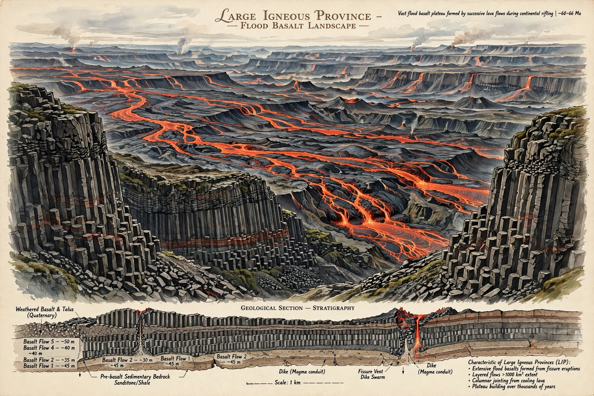

A large igneous province (LIP) is an extremely large accumulation of igneous rocks, including intrusive and extrusive forms, arising when hot magma intrudes through the crust and flows out over the surface.

Large igneous provinceLIPs are defined by areal extents greater than 100,000 km², igneous volumes greater than 100,000 km³, and emplacement over a geologically short interval, often a few million years or less. They include flood basalts, volcanic rifted margins, sill provinces, and large plutonic bodies. See also Flood basalt and Mantle plume.
Most models invoke mantle plumes rising from deep in the Earth, decompression melting, and lithospheric extension. Alternative models involve fertile mantle, plate tectonics, and meteorite impacts, though impact origins remain controversial.
The Siberian Traps (~252 Ma) are linked to the Permian–Triassic extinction, the largest mass extinction. The Deccan Traps (~66 Ma) coincide with the Cretaceous–Paleogene extinction. The Ontong Java Plateau is the largest oceanic LIP. Others include the Karoo-Ferrar, Paraná-Etendeka, and Columbia River Basalt Group. See Siberian Traps.
LIP eruptions release huge volumes of CO₂, SO₂, halogens and mercury, driving climate change, ocean anoxia and acidification. Several of the Big Five mass extinctions correlate in time with LIPs. They also host major ore deposits of nickel, copper and platinum-group elements.